The goal of hockeystick is to make essential Global Heating datasets easily available in R to non-climate experts. hockeystick users can download the latest raw data from authoritative sources as well as view it via pre-defined ggplot2 charts. Datasets include atmospheric CO2 and CH4, carbon emissions, instrumental, reconstructed, and paleo ice-core temperature records, sea levels, hurricanes, and Arctic/Antarctic sea-ice.
The choice of data was originally based on Professor Stefan Rahmstorf’s presentation on The 5 Most Important Data Sets of Climate Science. I came across this on a post on the Open Mind blog. I wrote my own post on obtaining and visualizing this data (now out of date), which is the basis for this package. Additional datasets and visualizations have been added over The name of the package stems from the well known hockeystick temperature chart.
hockeystick was highlighted on the RStudio RViews blog by Joseph Rickert as one of the “Top 40” new packages on CRAN in February 2021.
New in version 0.8.0: Daily temperature data from ClimateReanalyzer.com (see below).
New in version 0.7.0: Globally averaged methane (CH4) concentration from NOAA.
New in version 0.7.0: Cumulative emissions by country visualization.
New in version 0.6.0: Global CO2 emissions by region and country from GCP.
Installation
To install the latest hockeystick release from CRAN type:
install.packages("hockeystick")You may alternatively install the development version from https://github.com/cortinah/hockeystick with:
remotes::install_github("cortinah/hockeystick")Downloading and viewing global heating data
New: Plot daily global temperatures since 1979 and current anomaly:
library(hockeystick)
globaldaily <- get_dailytemp()
plot_dailytemp(globaldaily)
Retrieve NOAA/ESRL Mauna Loa CO2 Observatory concentration data and plot:
ml_co2 <- get_carbon()
plot_carbon(ml_co2)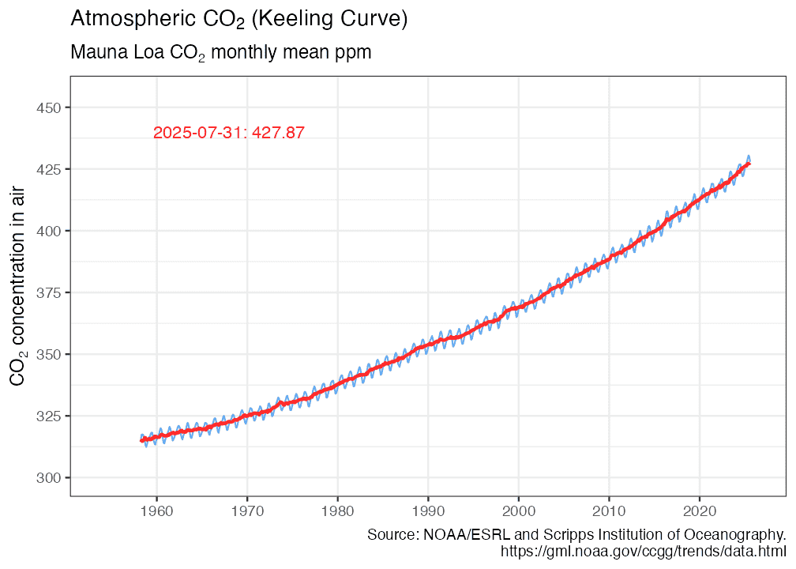
Retrieve GCP global CO2 emissions and plot:
emissions <- get_emissions()
plot_emissions(emissions)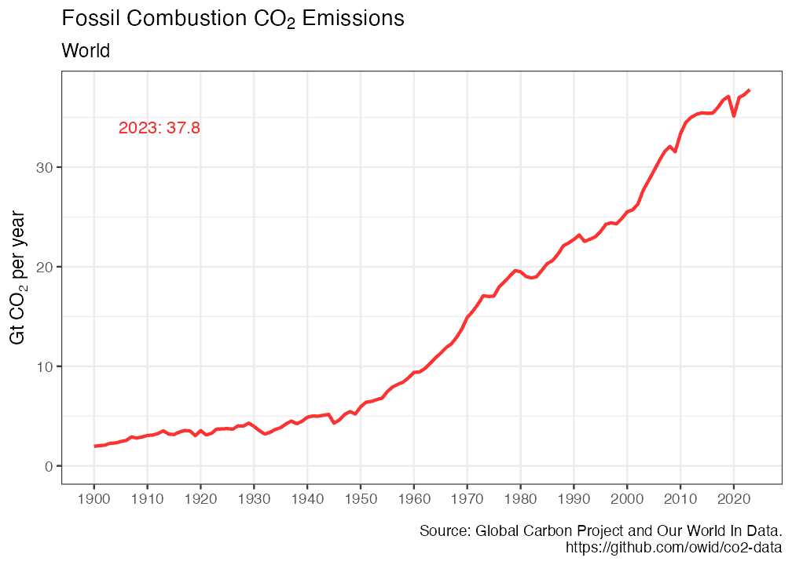
plot_emissions_with_land(emissions)Visualize cumulative emissions by country:
Retrieve NASA/GISS global surface temperature anomaly data and plot:
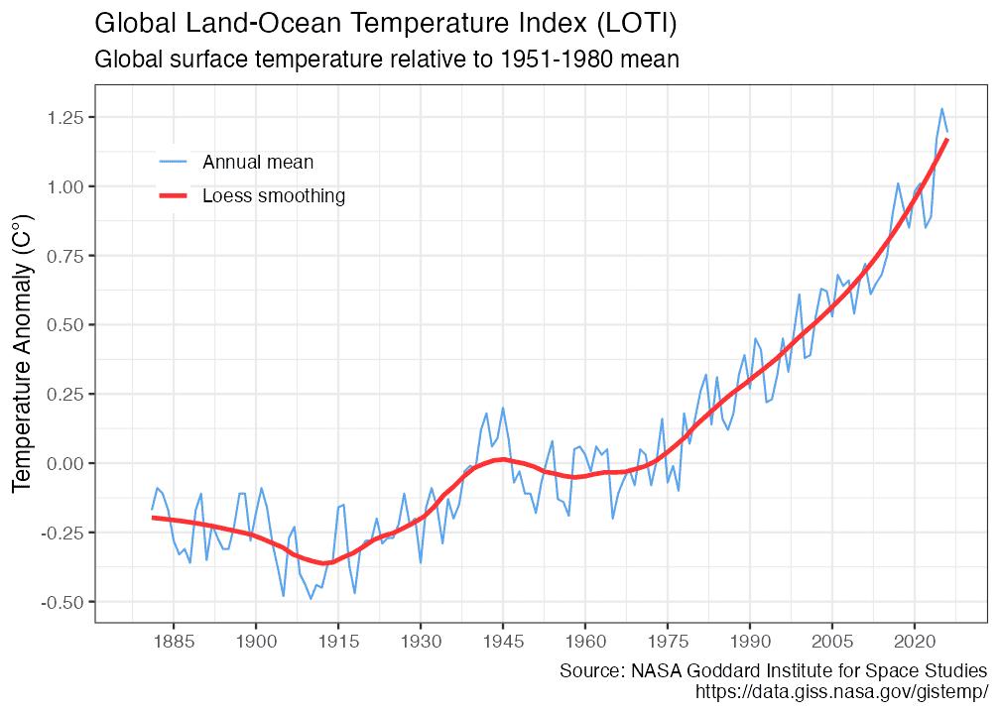
Visualize warming using Ed Hawkins styled “warming stripes”:
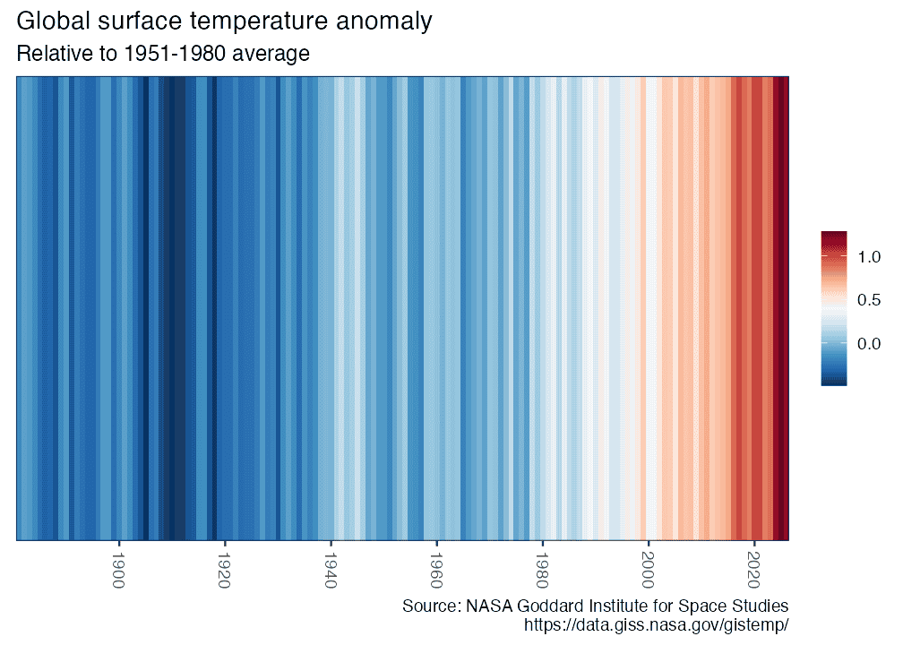
warming_stripes(stripe_only = TRUE, col_strip = viridisLite::viridis(11))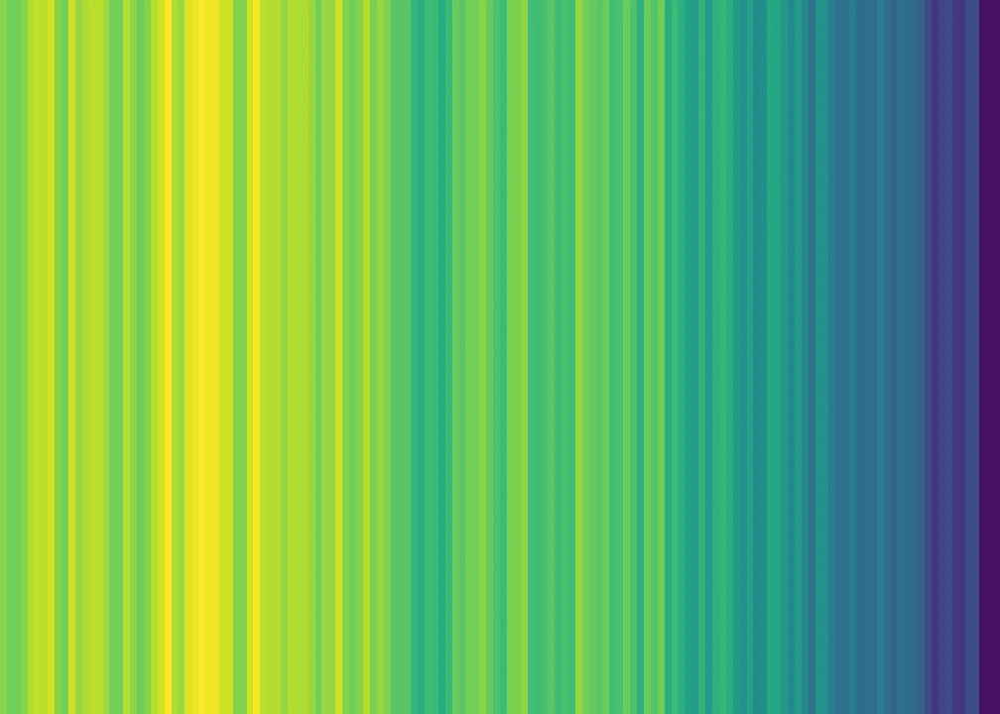
Retrieve tide gauge and satellite sea level data and plot:
gmsl <- get_sealevel()
plot_sealevel(gmsl)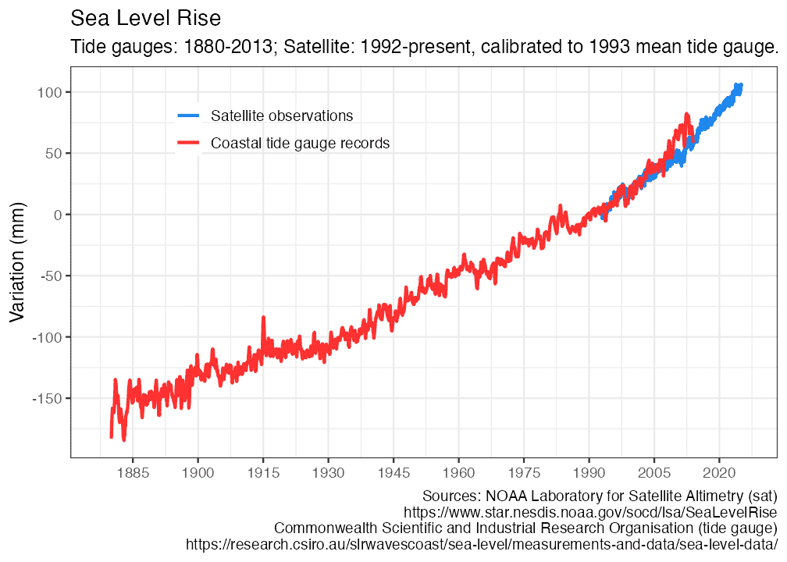
Retrieve July annual Arctic Sea Ice Index and plot:
seaice <- get_seaice()
plot_seaice(seaice)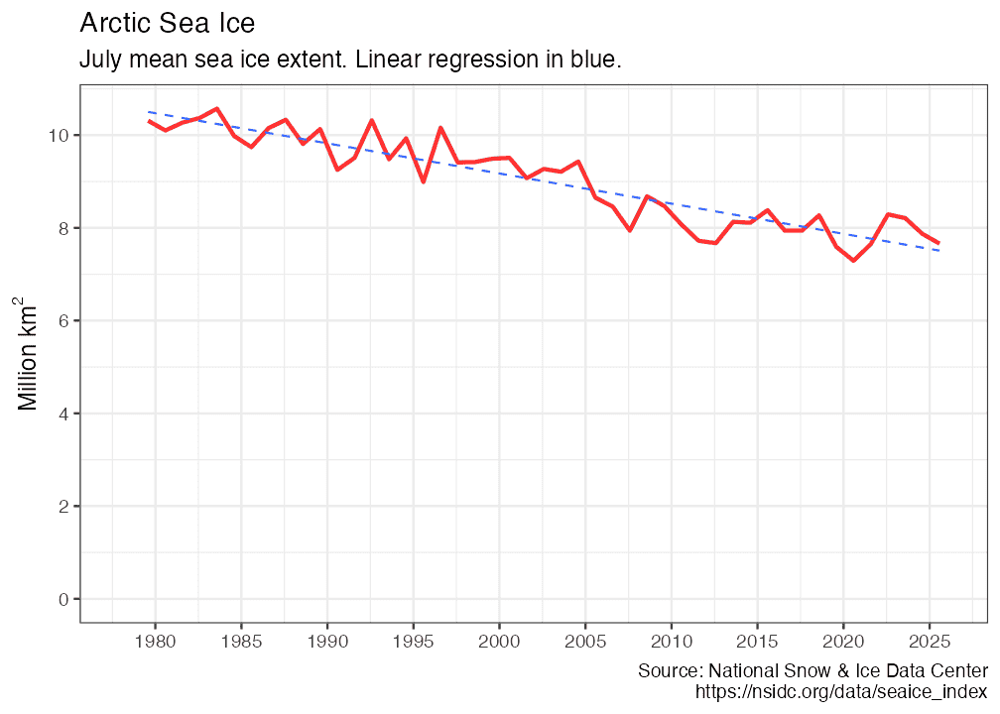
get_seaice() arguments can be modified to download Antarctic sea ice, and allow any month.
You can also visualize sea ice by month and year:
arcticice <- get_icecurves()
plot_icecurves(arcticice)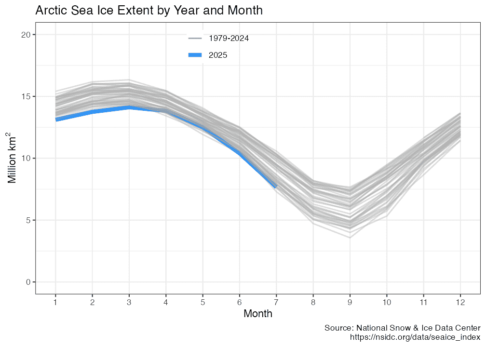
Retrieve Common Era temperature reconstruction and plot it with instrumental record:
anomaly2k <- get_temp2k()
plot_temp2k(anomaly2k)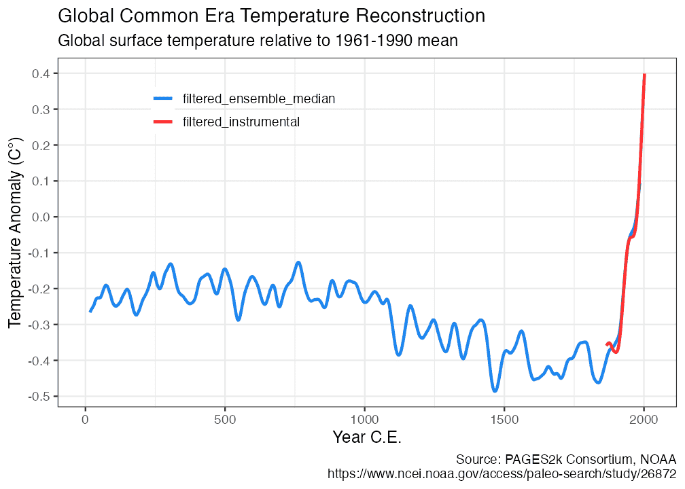
Retrieve NOAA HURDAT2 hurricane data and plot:
hurricanes <- get_hurricanes()
plot_hurricanes(hurricanes)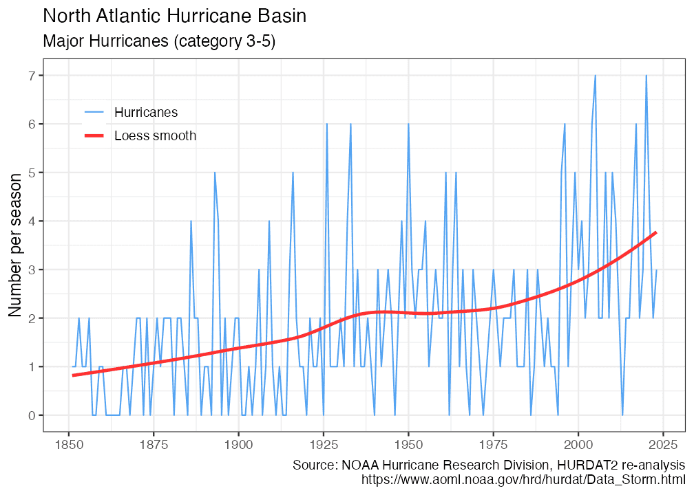
plot_hurricane_nrg(hurricanes)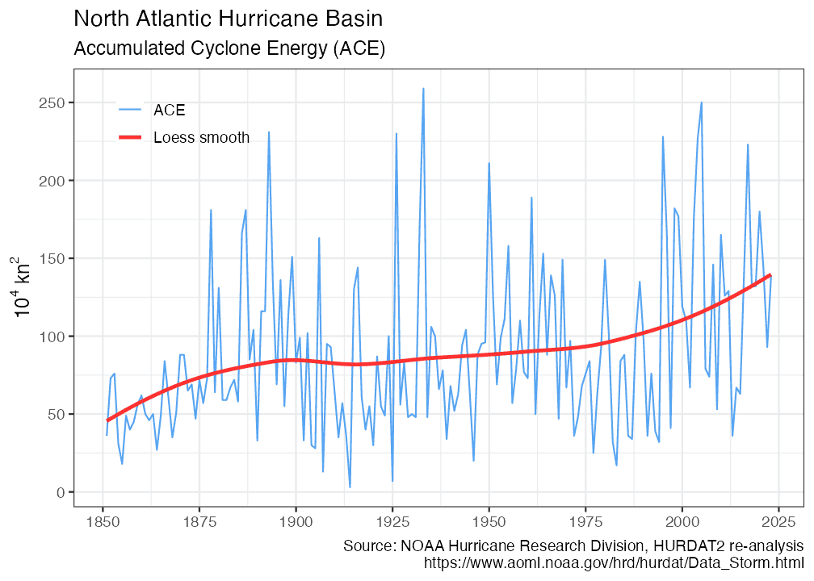
Retrieve NOAA/ESRL CH4 Globally averaged mean data and plot:
ch4 <- get_methane()
plot_methane(ch4)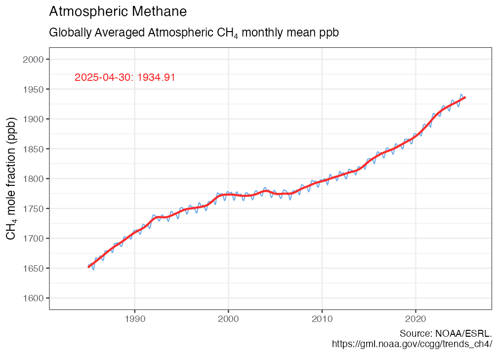
Retrieve Vostok paleo ice core data and plot:
vostok <- get_paleo()
plot_paleo(vostok)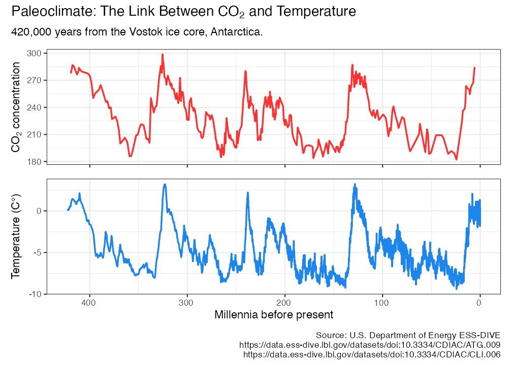
Managing the cache
By default, no climate data is cached, and all data is downloaded every time any of the get_ functions is called. To cache data for future use, use the write_cache = TRUE option, available in all of the get_ functions. To download and cache all data use hockeystick_update_all(). To view the files, date, and size of cached data use hockeystick_cache_details(). To re-download data from the source use the use_cache = FALSE argument in any of the get_ functions, for example: get_carbon(use_cache = FALSE, write_cache = TRUE). To delete all cached data use hockeystick_cache_delete_all().
Users may also cache data by default by adding options(hs_write_cache = TRUE)to their script or .Rprofile file.
Acknowledgments
- Carbon Dioxide concentrations: Dr. Pieter Tans, NOAA/GML (https://gml.noaa.gov/ccgg/trends/) and Dr. Ralph Keeling, Scripps Institution of Oceanography.
- Global temperature anomaly: GISS Surface Temperature Analysis (GISTEMP), version 4. GISTEMP Team, 2020: NASA Goddard Institute for Space Studies. https://data.giss.nasa.gov/gistemp/
- Warming Stripes design from Ed Hawkins’ Climate Lab. https://www.climate-lab-book.ac.uk/2018/warming-stripes/. In addition grateful to Dr. Dominic Royé for posting his approach to plotting them using ggplot2, which
warming_stripes()is based on. https://dominicroye.github.io/en/2018/how-to-create-warming-stripes-in-r/ - Sea level data: NOAA Laboratory for Satellite Altimetry (sat) and Commonwealth Scientific and Industrial Research Organisation (tide gauges)
- Sea Ice Index: National Snow & Ice Data Center. Data Archive: https://nsidc.org/data/explore-data
- Vostok carbon dioxide and temperature data: https://data.ess-dive.lbl.gov/datasets/doi:10.3334/CDIAC/ATG.009
- Common Era reconstructed temperature data: PAGES2k Consortium and NOAA).
- Hurricanes: National Oceanic and Atmospheric Administration HURDAT Atlantic Hurricane Database Re-analysis Project, particularly Dr. Chris Landsea.
- Carbon Dioxide emissions: Global Carbon Project and Our World In Data
- Methane: Lan, X., K.W. Thoning, and E.J. Dlugokencky, NOAA Global Monitoring Laboratory (https://gml.noaa.gov/ccgg/trends_ch4/).
- Thank you to Dirk Eddelbuettel for providing the .isConnected function from his tint package to test for internet connectivity.
- Thank you to Chris Campbell and Steven Bernard of the FT Climate Graphics Explained newsletter for sharing their code for climatereanalyzer.org daily temperature chart (Temperature Records Broken…Again, 9 July 2023). This code is the foundation of the get_dailytemp() and plot_dailytemp() functions.
Notes and resources
- All data is compiled to the best of my ability from reliable and peer-reviewed sources. Please open an issue if you are aware of enhanced or additional data that may be added to the package. Building
hockeystickis driven by my interest in tracking climate data and making it easily available to the community. - Here are some online resources I have found very helpful to learn mo re about climate science:
- MIT edX Global Warming Science. https://www.edx.org/learn/global-warming/massachusetts-institute-of-technology-global-warming-science
- SDG Academy: Climate Change: The Science and Global Impact. https://sdgacademy.org/course/climate-change-the-science-and-global-impact/